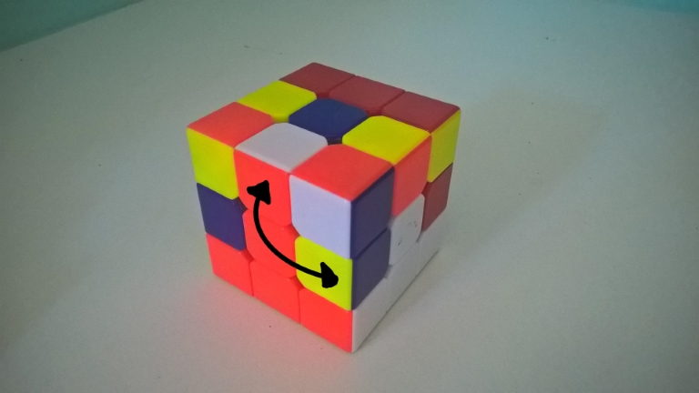
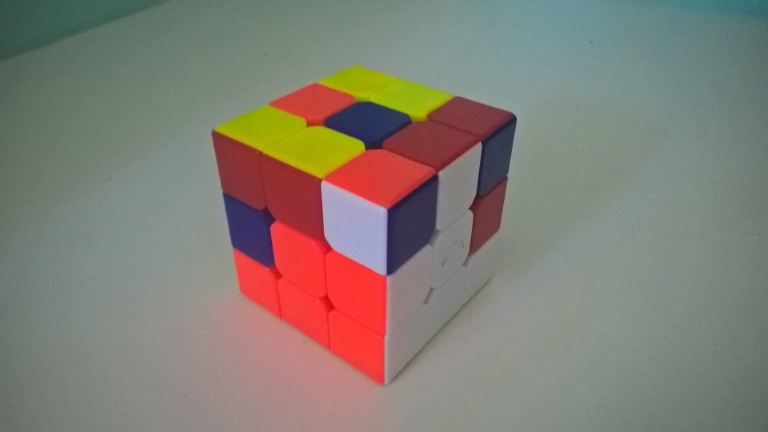
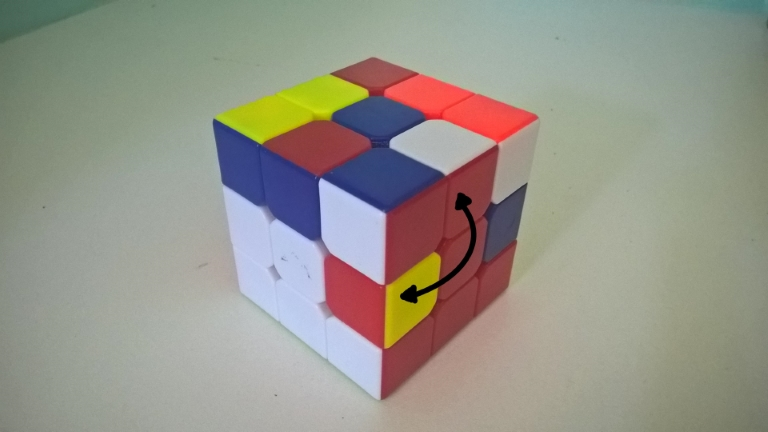
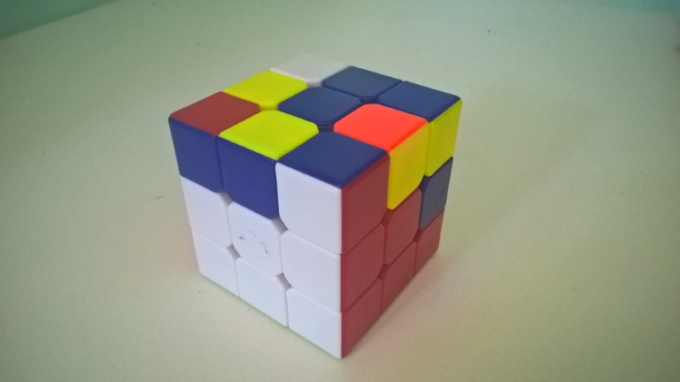

Montando o Rubik's Cube
4 - Posicionamento de Quinas Centrais
Procure uma quina central, repare nas duas cores; ela deve ser encada o mais próximo possível dos centros daquelas duas cores
Quina da Esquerda para Direita:
U R U' R' U' F' U F

->

Caso duas cores opostas não estejam alinhadas, você vai precisar trocar suas posições
Quina da Direita para Esquerda:
U' L' U L U F U' F'

->

Faça o mesmo em todas as outras quinas centrais
Base
----||||----
Topo